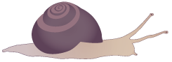

L'énigme de la vie
Doré veut faire une blague à Mifa.
Il s'allonge au sol et reste immobile.
– Doré ! qu'est-ce que tu as ? demande Mifa en accourant.
– Je suis mort, répond Doré.
– N'importe quoi : tu parles ! dit Mifa, énervée.
– Mais j'étais immobile !
Et un robot aussi peut parler, pourtant il n'est pas vivant !
Mifa réfléchit :
comment savoir si un caillou est vivant ?
C’est quoi la vie, en vrai ?

Voulez-vous jouer à un jeu ?
– Ouiiiii !
s'écrient Doré et Mifa.
Nous allons découvrir les secrets de la vie…
Aide Doré et Mifa à savoir ce qui est vivant et ce qui ne l’est pas :
Un oiseau est →
Un squelette de dinosaure est →
Un nuage est →
Un arbre est →
Un volcan est →
Une souris est →
– Donc les arbres ne bougent pas alors qu'ils sont vivants, les nuages bougent, mais ils ne sont pas vivants… C'est trop dur !
Tu as raison. La capacité de se déplacer, même si elle concerne une partie des êtres vivants, ne permet pas d'affirmer que quelque chose est vivant.
Il y a d’autres caractéristiques du vivant que nous allons découvrir…
Regardons cette plante :
– C’est la même plante, mais à différents moments, c’est ça ? demande Mifa.
Oui.
Que pouvez-vous observer ?
– Elle grandit !
s’écrie Doré en sautant en l’air.
– Le mystère, c’est comment elle fait pour grandir, dit Mifa.
Pour le savoir,
nous allons faire des expériences :
Aide Doré et Mifa en cliquant sur la réponse de ton choix.
Pour pousser, un végétal a besoin…
– Et il y a un escargot sur la plante ! remarque Doré.
– Oui, on dirait qu’il mange la feuille, dit Mifa.
C’est aussi ça, la vie : une plante a besoin d’eau et de lumière, et les animaux ont besoin de manger…
Doré ramasse une coquille d’escargot vide.
– Un escargot a perdu sa coquille : il doit être tout nu !
– Tu crois qu'il est mort ?
se demande Mifa.
– Il se serait fait manger ? gémit Doré.
– Mais…
qui a mangé l’escargot ?
Les hérissons aiment bien manger des escargots.
– Et qui mange les hérissons ?
Peut-être un blaireau ou un renard…
– Tout le monde mange tout le monde, alors ! s’énerve Mifa.
C’est ce qu’on appelle la chaîne alimentaire : ce sont les relations entre les individus d’un même milieu, qui leur permettent à tous de vivre et de grandir.
– Bon… On peut mourir de vieillesse, ou en se faisant manger… Mais la fin, c'est toujours la mort.
C'est quoi le début, alors ?
Aide Doré à trouver la bonne réponse :
Le début de la vie, c'est…
Doré et Mifa arrivent près d'un étang.
– Oh, regarde :
qu'est-ce que c'est ?
– Il y a des grenouilles à côté : ce sont peut-être leurs œufs ?
– Il y a aussi des têtards ! s'écrie Doré.
– Ils sont sortis des œufs, dit Mifa.
La famille des grenouilles, qui s’appelle les batraciens, a un type de développement par étapes au cours desquelles l’animal se métamorphose : c'est un développement indirect.
D’après toi, dans quel ordre se passe la métamorphose de la grenouille ?
– Tous les animaux se métamorphosent en grandissant ? demande Mifa.
– Non, regarde, s’écrie Doré. Les chatons sont comme des chats adultes, mais plus petits… et tellement mignons !
C’est vrai. Certains animaux, comme les chats, ont un développement direct.
Sais-tu si les animaux suivants ont un développement direct ou indirect ?
Le papillon a un développement…
 L’escargot a un développement…
Doré se demande :
– D’où viennent les œufs ?
– Tu devrais regarder par là !
– Elles jouent à la bagarre ? demande Doré.
– Mais non ! dit Mifa en riant.
– Elles font des bébés !
Oui, la reproduction est une étape nécessaire à la vie.
– Mais comment font les végétaux pour se reproduire ? demande Mifa.
D’après toi, comment les végétaux se reproduisent-ils ?
– Donc, si on résume…
La vie est une suite de changements :
un être vivant naît, se développe, se reproduit et meurt.
Doré s'interroge :
– On meurt dès qu’on devient adulte ?
– Non, tu as raison ! s’écrie Mifa. J’ai oublié l’étape de la vieillesse !
– Maintenant on sait qu’un caillou n’est pas vivant ! dit Mifa.
– Un caillou ne se reproduit pas, il ne se nourrit pas…
– Et il ne peut ni grandir, ni mourir…
On a résolu l’énigme de la vie !